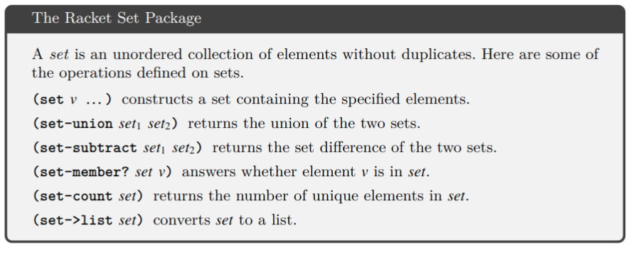

EOC in Racket
Table of Contents
1. 预备知识
在本章中我们回顾实现编译器所需要的基本工具, 程序通常被程序员以文本形式输入的,即一系列字符.
作为文本形式的程序表示被称为是 具体语法, 我们使用具体语法来简明地写出并讨论程序. 在编译器内部, 我们使用抽象语法树的方式来表示程序, 这种形式能高效地支持编译器需要执行的操作. 将具体语法转换为抽象语法的过程被称为"parsing". 本书不会包含parsing的理论以及实现. 在支持代码中已经提供了一个parser, 它负责把具体语法转换为抽象语法.
在编译器内部AST可以用很多种方式来表示, 这取决于编写编译器所用的编程语言. 我们使用Racket中的struct来表示AST. 我们将使用grammars来定义编程语言的抽象语法, 并使用模式匹配来检查AST中的各个节点. 我们将使用递归函数来构造并解构AST. 本章将对这些部分进行简要的介绍.
1.1. 抽象语法树
编译器使用抽象语法树来表示程序因为他们常常需要询问这样的问题: 对于给定的一部分程序, 它是那种语言特性? 谁是它的子部分? 考虑如下程序和其AST. 这个程序是一个加法运算, 并且它有两个子部分, 一个read运算和一个取反运算. 取反运算还有另一个子部分, 整数常量8. 通过用树来表示这个程序, 我们可以容易地跟着这些链接从程序的一部分到它的子部分.
为描述AST, 我们使用树的标准术语: 每个矩形被称为一个节点.箭头将每一个节点连接到其子节点. 最顶上的节点为root根. 除了根节点的每个节点都有一个父节点.若一个节点没有子节点, 则它是一个叶子节点, 否则它是一个内部节点.
我们为每种节点定义一个Racket中的struct. 在这章中,我们仅仅需要两种节点.一种代表整数常量, 另一种代表基本运算. 下面是整数常量的struct定义:
(struct Int (value))
一个整数节点只包含一个东西: 整数值. 我们建立struct名字的约定: 例如 Int, 首字母大写. 为了给整数8创建一个AST节点,可以写: (Int 8).
(define eight (Int 8))
我们称使用 (Int 8) 创建的值是 Int 结构体的一个实例.
下面的struct定义代表了基本运算:
(struct Prim (op args))
一个基本运算节点包含了一个运算符号, 和一个名为args的参数子节点列表. 例如为了创建一个对数字8 取相反数的AST, 可以像这样做:
(define neg-eight (Prim '- (list eight) ))
基本运算可以有零个或多个子节点. read运算符有零个参数:
(define rd (Prim 'read '()))
加法运算有两个子节点:
(define ast1_1 (Prim '+ (list rd neg-eight)))
我们在Prim结构体上做了一个设计上的选择. 可以为每个运算符分别定义了一个结构, 而不是多种运算符使用一个结构体:
(struct Read ()) (struct Add (left right)) (struct Neg (value))
我们选择只使用一个结构体的原因是,编译器的许多部分可以为不同的运算使用相同的代码, 因此我们可能通过使用一种结构来实现只写一遍代码.
为了编译如1.1这样的程序, 我们需要知道关联于根节点的运算是加法, 并且我们能访问到其两个子节点.Racket提供了模式匹配来支持这些种类的查询, 我们将在1.3节中看到.
我们经常写出的是一个程序的具体语法, 即便我们心中想的是其AST, 因为具体语法更加简明. 我们建议你总是以抽象语法树的形式来看待程序.
1.2. Grammars (文法)
编程语言可以被视为所有程序构成的集合. 这个集合是无限的, 因此没有人可以仅仅通过列出此语言的所有程序来描述这门语言. 相反, 我们写下一组规则,即 grammar, 来构建程序. 文法常常用来定义一门语言的具体语法, 但它们也可以被用来描述抽象语法. 我们以一种BNF的变体来书写文法规则. 作为例子, 我们描述一门小的语言, 叫做Lint , 它是由整数和算术运算组成的.
Lint 的抽象语法的首个规则表明一个Int结构体的实例是一个表达式:
exp ::= (Int int)
每条规则有左侧和右侧, 若你有一个AST节点能够和右侧相匹配, 那么你就可以通过左侧将其归类. 用粗体表示的符号,例如 Int , 表示终结符, 并且必须字面上出现于程序中才适用于此规则. 我们的文法不涉及空白符号, 即 空格, Tab, 换行.在符号中间插入空白符的是为了消除歧义,并增加可读性. 文法中定义的如同 exp 这样的名字被称为非终结符.名字 int 也是一个非终结符, 但我们用如下的解释来定义它, 而不是用文法规则. 一个 int 是数字的序列,并可能以 - 开头, 这样的数字序列可以表示范围在 -262 到 262 -1 之间的整数. 这使得可以表示63位的整数, 也简化了编译过程中的许多方面. 因此在64位机器上这些整数对应着Racket中的fixnum数据类型.
第二个文法规则是 read 操作, 它可以接受来自用户程序输入的整数.
exp ::= (Prim 'read ())
第三条规则将对一个表达式取相反数归类为exp:
exp ::= (Prim '- (exp))
2. Ch3 寄存器分配
在上一章中, 我们学习了如何将Lvar编译到x86, 以及将变量存储到过程调用栈. CPU可能会需要10到100个周期访问栈上的位置, 然而它访问寄存器是需要单个cpu周期. 在本章中, 我们将通过将某些变量存放到寄存器上的方式提高生成代码的效率.寄存器分配的目的是尽可能地将变量放到寄存器中. 某些程序的变量数量可能会超过寄存器的数量, 因此我们不能总是将每个变量映射的不同的寄存器中. 幸运的是, 在程序执行期间, 不同的变量通常是在不同的时间段内被使用的,在这种情况下, 我们可以将多个变量映射到同一个寄存器中.
下面的程序可以作为例子, 源代码在左侧, 指令选择的输出结果在右侧. 输出的程序几乎就是完整的x86汇编, 但仍使用了变量.
(let ([v 1])
(let ([w 42])
(let ([x (+ v 7)])
(let ([y x])
(let ([z (+ x w)]))
(+ z (- y) )
)))))
指令选择:
locals-types: x: Integer, y: Integer z: Integer, tmp: Integer v: Integer, w: Integer start: movq $1, v movq $42, w movq v, x addq $7, x movq x, y movq x, z addq w, z movq y, tmp negq tmp movq z, %rax addq tmp, %rax jmp conclusion
考虑变量x和z, 在变量x被移动到z后,变量x不再被使用了.另一方面, 变量z仅仅在此处之后才被使用, 因此变量x和z可以共享同一个寄存器.
3.2节的话题是计算一个变量在何处被使用. 一旦我们有了这个信息, 我们可以计算出哪些变量被同时使用, 即: 哪些变量之间相互"干涉", 并将这种关系表示为无向图, 其顶点代表变量, 边表示两个变量相互干涉. 我们将寄存器分配建模成图着色问题.(3.4节)
若经过这些努力后,寄存器的数量仍然不够, 我们就要将剩下的变量放在栈上, 类似于上一章中处理变量的方式.经常用术语spill(溢出)来表示将变量分配到栈上. 将一个变量溢出的决定是由图着色过程的一部分处理的.
我们做出简化的的假设, 每个变量只能被分配到一个位置上(寄存器/栈). 一个更复杂的方法是在程序的不同位置为一个变量分配一个或多个位置. 例如若一个变量在一个短序列中被频繁使用, 并在之后的其他指令中被使用,那么可能更高效的一种分配方式是, 在开始的使用序列中将此变量分配到寄存器中, 然后在其余的生命周期中将其分配到栈上.
2.1. 3.1
在执行寄存器分配时，我们必须了解调用约定，这些约定管理在 x86中如何执行函数调用。尽管 LVar 不包含程序员定义的函数，但是我们生成的代码包含一个由操作系统调用的main函数，并且我们生成的代码包含对 read_int 函数的调用。
函数调用需要两段代码之间的协调，这些代码可能由不同的程序员编写，也可能由不同的编译器生成。在这里，我们遵循 Linux 和 MacOS 上的 GNU C 编译器使用的 System V 调用约定. 调用约定包括函数如何共享寄存器的使用规则。特别是，调用方负责在函数调用之前"释放"(保存值)一些寄存器，以供被调用方使用。这些被称为调用者保存的寄存器, 它们是:
rax rcx rdx rsi rdi r8 r9 r10 r11
另一方面, 被调者的负责保存值的寄存器,被称为被调者保存的寄存器, 它们是:
rsp rbp rbx r12 r13 r14 r15
我们可以从两种视角来思考调用者/被调者约定, 调用者视图和被调者视图:
- 调用者应当假设所有调用者保存的寄存器都将会被被调用方写入的任意值覆盖. 另一方面调用者个可以安全地假设所有被调者保存的寄存器中的值不会被修改.(在调用后)
- 被调用方可以自由地使用任何调用者保存的寄存器. 然而,若被调方想使用一个被调用者保存的寄存器, 被调方必须在返回到调用方之前将寄存器的原始值放回. 这个可以通过在函数开头将值保存到栈中,并在函数末尾将值还原来实现.
在x86中, 寄存器也经常被用于将参数传递给函数, 以及承载返回值. 特别地, 前6个函数参数被依次传递到下面的寄存器中:
rdi rsi rdx rcx r8 r9
若参数多于六个, 根据约定就爱你个使用调用方Frame中的空间来传递剩下的参数. 然而在第七章中, 我们将安排使得从不需要使用超过六个参数. 现在我们唯一需要关心的函数是 read_int ,它没有参数. 寄存器RAX用来承载函数的返回值.
下个问题是这些调用约定如何影响寄存器分配. 考虑下面的Lvar程序. 我们首先从调用者的视角来分析此例,随后从被调者的视角分析. 我们称一个变量是 call-live 变量, 若这个变量在函数调用期间被使用.
这个程序调用了read两次. 变量x是call-live的, 因为它在第二个read调用期间仍是被使用的; 我们必须保证x在函数调用期间不会被覆盖. 一个显然的方法是在每次函数调用之前将调用者保存的寄存器存放到栈中, 并在每次调用后恢复这些寄存器的值. 采用这种方法, 若寄存器分配器选择将x分配到一个调用者保存的寄存器中, 其值必须在read调用期间被保留. 然而在栈中保存和恢复值是相对缓慢的. 若x的使用频率不高, 那么可能更好的方式是将这种x在一开始就分配在栈中. 或者更好的做法是, 若我们能将x分配到被调者保存的寄存器中, 那么在函数调用期间就无需对其进行保存和恢复了.
我们推荐处理call-live变量的方法是要么将它分配到被调者保存的寄存器, 要么将其溢出到栈中. 另一方面, 对于非call-live的变量, 我们依次尝试如下的选项: (1) 寻找任意一个可用的调用者保存的寄存器(尽量为call-live变量留出空间) (2) 寻找一个被调者保存的寄存器 (3) 将变量溢出到stack上.
在图着色寄存器分配器中实现这个方法是很直接的. 首先, 因为我们已经知道在每个指令处哪些变量是被使用的, 因此我们能知道哪些变量是call-live的. 其次, 当我们构建冲突图时, 我们为每个call-live变量和调用者保存的寄存器之间添加一条边. 这将避免图着色算法将call-live变量分配到调用者保存的寄存器中.
回到上面的例子中, 我们来分析右侧的x86代码. x被分配到rbx, 一个被调者保存的寄存器. 因此它在第二个readint调用期间已经处于安全的位置. 然后, y被分配到rcx, 一个调用者保存的寄存器, 因为y不是一个call-live变量.
下面我们从被调者的视角来分析这个例子, 重点关注main函数的开头和结尾段. 和平常一样, 开头段开始于保存rbp寄存器到栈中, 并设置rbp为当前栈指针. 现在我们知道为什么要保存rbp:因为这是一个被调者保存的寄存器, 并且rbx被分配给变量x. 其余的被调者保存的寄存器没有被保存是因为他们从没被被使用. 将rsp减去8字节是因为要保证它是16字节对齐的. 再来看结尾段, 我们可以看到rbx被popq指令从栈中恢复.
2.2. 3.2 活跃分析
uncoverlive执行活跃分析, 它负责发现在程序的不同区域内哪些变量是可用的. 一个变量/寄存器被称为在某个程序点是live的, 若其当前值在之后的程序点被使用. 我们将变量, 栈上位置, 以及寄存器统称为 位置locations . 考虑下面的代码段,有两处对b进行写入. 变量a和b是否会在同时是live的?
回答是否定的. 因为a在1-3行是live的, b在4-5行是live的. 在第二行被写入的整数值30从来没有被使用过, 因为它的值在被读取(line 5)前就被覆盖了(line 4)
每条指令的活跃位置可以通过从后向前遍历指令序列来计算得出. 令 I1, I2, .. , In 为指令序列. 我们用 Lafter(k)表示在指令Ik之后的活跃位置之集.用Lbefore(k) 表示Ik之前的活跃位置之集. 我们推荐用Racket中的set数据结构来表示这些集合.

在指令之后的活跃位置之集总是和下一条指令之前的活跃位置之集是相同的.
在最后一条指令之后没有任何活跃位置:

然后我们从后向前地遍历指令序列并重复使用下面的规则:
其中, W(k)是在Ik中被写入的位置, R(k)是在Ik中被读取的位置.
jmp指令是一个特例. 在jmp之前的活跃变量之集应该是jump目标处的Lbefore集. 因此我们建议维护一个名为label->live的alist, 它将每个标签映射到它所在块中首条指令的Lbefore集. 就目前来说, x86Var中唯一一个jmp指令是跳转到结尾段.结尾段读取了rax和rsp,因此alist应将conclusion映射到集合{rax,rsp}
让我们回到之前的例子, 从第五行开始应用这些公式. 第五行的Lafter是空集因为它是最后一条指令,其Lbefore是{b,c} 因为它读取了b和c.
第四条指令的Lafter集合等于Lbefore(5)={b,c}. movq指令写入b,并且没有读取任何变量,因此
第三条指令的Lbefore是{a}, 因为它写入了c并从a读取. 第二条指令的live before是{a}, 因为它只写入b,并且没有读取任何变量. 最后第一条指令的live before是空集,因为它仅仅写入了a.
2.3. 3.3 构建干涉图
在基本的活跃分析中, 我们知道了每个变量在何处是活跃的.然而在寄存器分配中, 我们需要回到这个问题的特殊形式: 两个变量是否在同一时刻是live的, 若是, 那么它们则不能被分配到同一寄存器. 为了可以更高效地回答这个问题, 我们创建另一个明确的数据结构, 干涉图. 干涉图是一种无向图, 若两个位置在同一时刻是活跃的,那么它们之间有一条边. 我们推荐使用Racket中的graph来表示干涉图.
一个直接计算出干涉图的方法是查看每条指令之间的活跃变量之集, 并为在同一集合中的两个变量之间添加一条边, 因为两个原因,这个方法不是很理想. 首先, 这个方法的开销太大, 因为它花费O(n2)来对n个元素的活跃变量集合中每两个变量添加边.其次, 在两个位置有相同值的特殊情况下(一个被赋值给另一个), 它们可以同时是活跃的,并且不会相互干涉.
另一个计算干涉图的更好的方法是关注写入. 由一条指令执行的写入一定不会覆盖某处的活跃位置. 因此对每条指令, 我们在被写入位置和活跃位置之间创建一条边. (一个位置永远不会和自身干涉) 对于callq指令, 我们考虑所有已经被写入的调用者保存寄存器, 因此在每个活跃变量和每个调用者保存的寄存器之间有一条边. 并且, 对于movq也有一个特殊情况, 两个变量存放相同的值, 若一个活跃变量v和movq的源操作数相同, 则没必要在v和目标操作数之间添加边,因为它们都存放相同的值. 因此我们得到下面两条规则:
- 若指令Ik是形如 \(movq \ src,\ dst\) 的move指令, 则对每个 \(v \in L_{after}(k)\), 若 \(v \neq d\) 且 \(v \neq s\), 则为 d,v添加一条边.
- 对其他的指令Ik, 对每个d ∈ W(k), 每个v ∈ Lafter(k), 若v!=d, 则为d,v添加一条边.
在3.5中从顶向下对每条指令应用这些规则, 我们重点关注一些指令.第一条指令是 movq $1,v, 并且其live-after集合是{v,rsp}. 应用规则1, v和rsp冲突. 第四条指令是addq $7,x,并且live-after集是{w,x,rsp}.应用规则2, 因此x与w和rsp是冲突的. 下面一条指令是 movq x, y, 其live-after集合是{w,x,y,rsp},应用规则1, y与w,rsp是冲突的, 但和x不冲突,因为x是movq指令是源操作数, 因此x和y的值相同. 下图列出了所有指令的冲突结果, 以及构建出的冲突图:
2.4. 基于数独的图着色
我们来到本章中要讨论的主要问题, 将变量映射到寄存器或栈空间. 相互冲突的变量必须被映射到不同的位置. 就冲突图来讲, 这意味着相邻顶点必须被映射到不同的位置. 若我们将位置看作是颜色, 寄存器分配问题就变成了图着色问题.
读者可能比他自己能意识到的更熟悉图着色问题, 著名的数独游戏就是一个图着色问题的例子. 下面描述了如何从起初的数独构建出一个图.
- 每个数独中的格子是图中的一个顶点.
- 对任意两个方格,若它们在同一行,或同一列, 或同一3*3区域, 那么它们在图中有一条边.
- 将九种颜色分别对应于数字1-9.
- 在数独盘初始分配的数字的基础上, 将对应的颜色分配给图中的对应顶点.
若你可以用九种颜色为剩下的顶点上色, 那么你就可以解出对应的数独游戏. 图3.9显示了初始的数独盘以及对应的顶点上色的图. 这里我们用颜色的黑白表示, 将数字1映射为黑色, 数字2映射为白色, 数字3映射为灰色, 我们只列出了一部分顶点(已经被上色的)的边,因为为所有顶点画出边会让图变得很难读. 数独中的某些技术对应于图着色算法中的启发式方法. 例如一个基本数独技术被称为Pencil Marks. 其想法是使用一个消除的过程来确定哪些数字对一个方格来说不再是可用的, 并将该数字很小地写在方格中. 例如若数字1被分配到某个格子, 于是将pencil mark 1写在所有在同一行, 同一列, 同一3*3区域的方块中, 目的是标记1对这些方格是不可用的. Pencil Mark技术对应于图论中saturation(饱和度)这个概念. 在数独中, 一个顶点的饱和度是其不再可用的数字之集. 在图论中, 我们有以下定义:
\[saturation(u) = \{c | 存在v, v \in adjacent(u) 且 color(v)=c \}\]
(相邻顶点的颜色之集.)